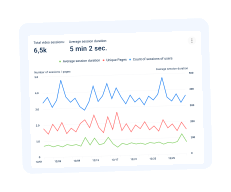
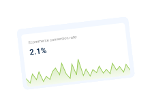
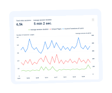
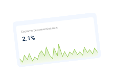

How to do a Website Audit to Improve SEO & Conversions


 



6 Reasons to Use Plerdy Data for a Website Usability Audit
So, it’s high time for you to stop losing 99% of potential clients due to being unaware of your website users’ behavior patterns and needs.

How to do a Website Audit to Improve SEO & Conversions
You will get an SMS with a link to the webinar
Powered by Plerdy